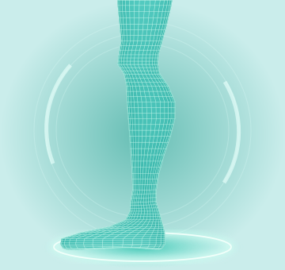
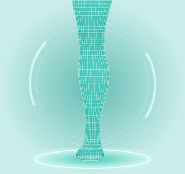
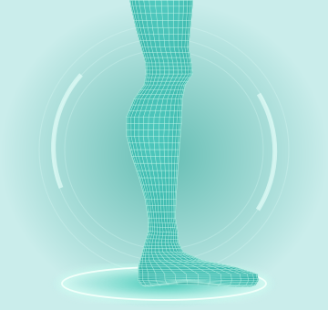

Computer vision
Prepare and isolate the target leg region so reconstruction starts with useful, consistent inputs.
An AI research project that turns three ordinary photos into a way to explore the shape and volume of a leg.
Discover the purpose ↓

01 / FRONT
03 / RIGHTOur goal is to make monitoring leg shape and volume accessible, quick and convenient using a familiar device: a camera.
Small changes can be difficult to judge from memory or a single photograph. Repeatable measurements could give people and clinicians a clearer record to discuss over time.
The research question: how accurately and consistently can we measure leg volume from three photographs?
Select a step to see what it contributes.
Take one photo from the front, one from the left and one from the right. Keep the whole target area visible, with consistent lighting, pose and camera height.
The measured leg length provides a reference for real-world scale. Clear capture instructions help make repeat scans comparable.
Image preparation and AI reconstruction turn the views into a 3D mesh: a surface made of connected vertices and faces.
Our research pipeline already reconstructs models from multiple images. We are testing its accuracy and consistency before connecting it to this website.
Mesh processing checks the surface and applies scale calibration. A suitable, closed mesh can then be used to calculate the volume of the defined leg region in cubic centimetres.
Volume accuracy, measurement boundaries and reconstruction quality are still being evaluated. A visually convincing model is not automatically an accurate measurement.
Saved scans can bring volume, shape and dates into one view. The goal is to compare measurements taken under consistent conditions and make changes easier to review.
The current website saves demo sessions locally. Real comparisons will use your pipeline results once integration is complete.
Prepare and isolate the target leg region so reconstruction starts with useful, consistent inputs.
The reconstruction stage transforms image information into a three-dimensional representation of the leg.
Inspect mesh geometry, apply scale and calculate volume for a clearly defined measurement region.
Rotate and explore the model in your browser. This prototype uses Canvas; Three.js is planned for viewing the pipeline’s real 3D output.
Multi-image reconstruction is working. We are testing model quality and developing scaled volume calculations.
Photo uploads, animated processing, sample results, reports and local demo history are available. The research model is not yet connected to the website.
With clinicians, we aim to develop and validate criteria for interpreting changes and deciding when further examination may be appropriate.
LegSense does not currently provide a diagnosis or a medical assessment. Any future health recommendations will require clinical validation. The long-term aim is an accessible monitoring tool that helps users and clinicians review changes and discuss next steps.
Try the interactive demonstration, or return to the capture guide.